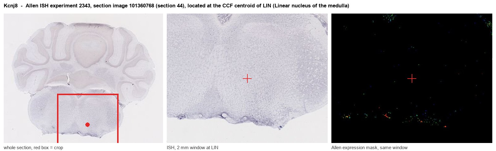
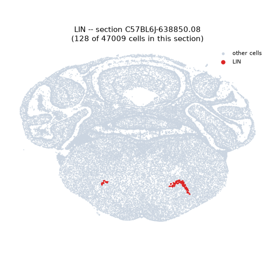
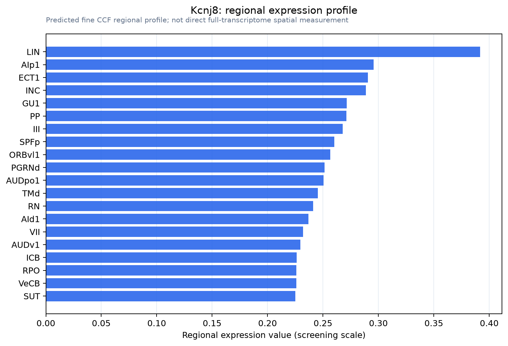

Kcnj8
ATP-sensitive inward rectifier potassium channel 8 (Inward rectifier K(+) channel Kir6.1) (Potassium channel, inwardly rectifying subfamily J member 8) (uKATP-1)
Spatial tier: REGION_BIASED · Class: ION_CHANNEL · Top region: LIN (Linear nucleus of the medulla) · Positive regions: 32/554
Function in LIN: evidence, prediction, innovation
- Gene function
- Kcnj8 encodes Kir6.1, the pore-forming inward-rectifier subunit of the vascular ATP-sensitive potassium (KATP) channel, which assembles with the sulfonylurea receptor SUR2B (Abcc9). The channel opens when intracellular ATP falls or cAMP rises, hyperpolarising the cell and relaxing vascular smooth muscle. Human gain-of-function mutations in KCNJ8 or ABCC9 cause Cantu syndrome, with low vascular tone and cardiomegaly.
- Region function
- The linear nucleus of the medulla is a small cell group in the sensory-related medulla, lying near the vestibular and cochlear nuclear complexes and the inferior olive, implicated in vestibular and reticular relay.
- Published in this region
- none No region-specific literature found. The closest work is that Kcnj8 was identified as a novel brain pericyte marker by microarray of microvessels from PDGF-B and PDGF-Rbeta mutant mice (Bondjers et al. 2006), and that single-cell atlases of the mouse brain vasculature confirm Kcnj8 as a mural-cell transcript (Vanlandewijck et al. 2018; He et al. 2018).
- Predicted function
- Prediction: this signal is very likely vascular rather than neuronal, reflecting dense pericyte and arteriolar smooth-muscle coverage of the medulla; neuronal brain KATP channels use Kir6.2 (Kcnj11), not Kir6.1. The predicted local function is metabolic vasodilation, coupling oxygen and ATP levels to capillary and arteriolar tone in a brainstem territory that must defend perfusion. Mural-cell-restricted Kcnj8 deletion, or openers such as pinacidil, should change resting medullary blood flow and functional hyperaemia, with any vestibular phenotype secondary to perfusion.
- Innovation
- ★★★★☆ 4/5 Region-level KATP control of brainstem perfusion is unstudied, though the likely vascular origin of the signal lowers the neuroscience payoff.
- Tools
- Kcnj8 global and conditional knockout mice; KATP openers pinacidil, diazoxide, cromakalim; blocker glibenclamide; anti-Kir6.1 antibodies; mural-cell targeting with Pdgfrb-CreERT2, Cspg4 (NG2)-CreER and Myh11-CreERT2.
- References
Direct evidence located at the region

Allen ISH experiment 2343, section image 101360768 (section 44): the section that contains the CCF centroid of Linear nucleus of the medulla according to the Allen image-to-atlas alignment (reference_to_image), with a 2 mm window around that point. Left: whole section, red box = window. Middle: ISH signal. Right: Allen's expression-mask view of the same window. open this image in the Allen viewer
Direct spatial evidence

Regional expression figure

Predicted WMB × fine-CCF profile; not direct full-transcriptome spatial measurement.
Spatial profile
Evidence and specificity
- Evidence status
- PREDICTED_FINE
- Direct sources
- None; predicted localization only
- Exclusive threshold
- 12 positive regions out of 554
- Spatial specificity
- 0.291
- Top-region fraction
- 0.052
- Filter status
- PASS
Interpretation limits
- Cell-type-to-region projection is imputed expression, not direct spatial measurement.
- Adult reference atlases do not establish stability across age, sex, strain, state, or disease.
- Transcript abundance does not guarantee protein abundance or genetic-tool performance.